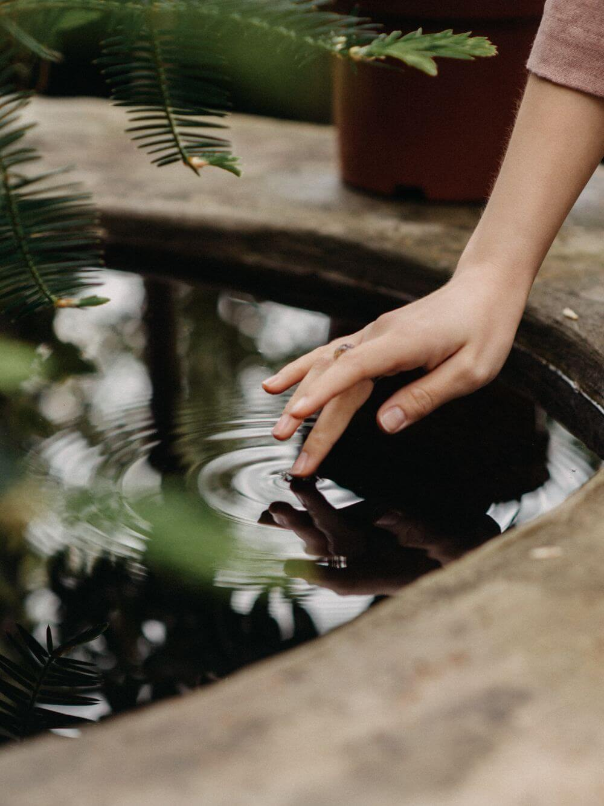
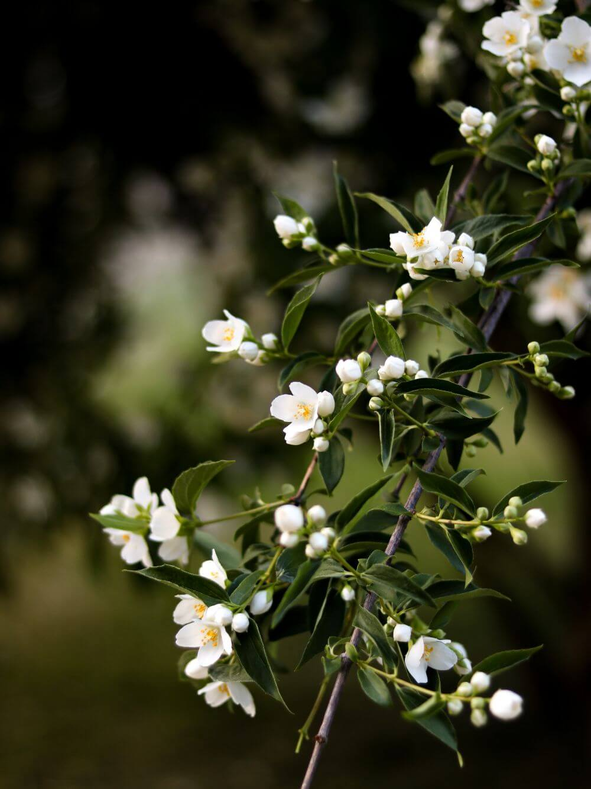

A dose of Vitamin G
Several studies have shown that immersing ourselves in nature, or even just looking at it, is good for our mental and physical health. Researchers have discovered that a daily dose of Vitamin G (Green) can be highly effective in reducing stress, anxiety, depression and fatigue. Read on to learn more about some of the features we have incorporated into our wellbeing garden and how they can revitalise us.
Water

Scent

Colour
Research has shown that living near water has a positive effect on human health. We strive to harness its healing powers throughout the garden to leave you feeling restored and rejuvenated. The stillness of our wildlife pond provides a calm haven where you can reflect, be mindful and let nature fascinate you. Our paths are flanked by rills of trickling water that provide a soothing, mesmeric soundscape.